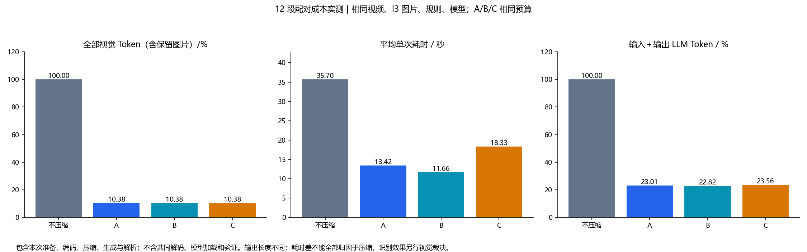
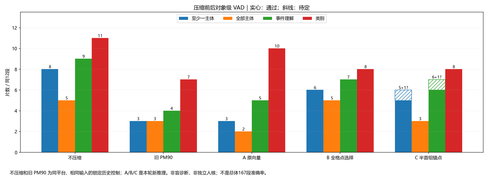
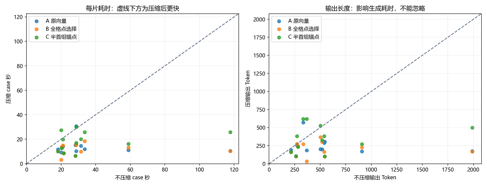

12 段实际 Token 压缩热力图12 段视频：真实 Token 压缩热力图
旧 PM90 与 A/B/C 使用相同完整 10 FPS 输入和相同输出 Token 预算。A 仅去掉合并；B 更换选择排序；C 在同预算内保留半首时间组。
颜色表示保存下来的实际压缩计划，不是模型注意力或异常概率。黑紫是被删源格，亮色是保留或参与合并的源格，青点是输出中心。归一化权重仅描述压缩运算；不能据此宣称识别到了完整人体。每时间组对应两帧，图中展示第一帧。I3 局部图仍保留、未画在视频热力图中。

12×3 新输出均技术有效；视觉识别评价单独记录，不能用运行成功替代正确率。
逐片视觉复核
固定12段；助手同会话非盲复核。斜线保留待定，不作成功计数；尚非独立人核。


特征位置不等于像素遮挡：所有原帧先完整经过视觉编码器。黑块表示该位置的特征未进入压缩后序列，不能据此断言模型完全没见到该人物。